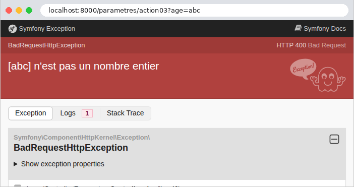
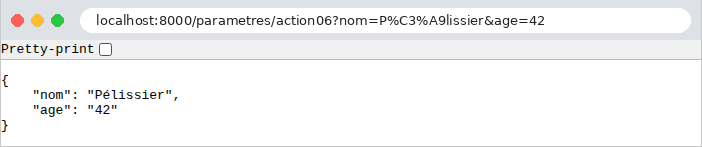
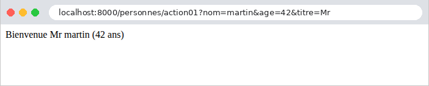
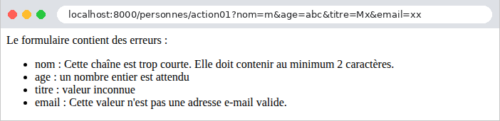

3. The Action Template
An action requires information sent by the browser: the parameters of the URL ([?nom=martin&age=42]), form fields, the request body JSON, and sometimes a request header HTTP. The original course refers to all of this information as the action model. This chapter shows how an action [Symfony] retrieves this information, converts it to the correct type, and validates it. This process is called data binding.
[Symfony] provides access to the request information via the [Request] object (Example 05), in the form of character strings, along with a few conversion methods. It can also bind this information to the parameters of an action using attributes ([#[MapQueryParameter]], [#[MapQueryString]], [#[MapRequestPayload]]) and validate it using its Validator component: We describe the expected data using constraints (“required,” “an integer between 0 and 150,” etc.), written as attributes such as [PHP], and the validator checks that the data complies with them. We will first read the parameters manually (example 07), then let the framework handle their conversion and validation (examples 08 through 12). In the next chapter, the same constraints will validate the HTML forms.
Note the terminology: in the next chapter, the word “model” will primarily refer to the data that an action passes to its view. The model of an action, as used in this chapter, is what it receives.
Examples 07 through 12 are run in the same way as those in the previous chapter: a terminal open to the example folder, [php -S localhost:8000 -t public]; [Ctrl-C] shuts down the server. Most use the listener [JsonLisible] from Example 03, resulting in a readable JSON. We will comment on their configuration files only when they introduce something new.
3.1. Example 07: The settings for URL
The parameters for the URL are the portion that follows the [?]: [?nom=martin&age=42]. This portion is called the query string. Each parameter is a pair of [nom=valeur]; the pairs are separated by [&]. The controller [ParametresController]:
- line 22: the [query] property of the request contains the parameters of URL, in a parameter “bag” (a [InputBag] object), whose [get] method returns the value of a parameter—already decoded—or [null] if it is absent;
- line 23: the action displays the value and its type: the function [get_debug_type] returns the name of a value’s type. A value retrieved from URL is always a string ([string]). The operator [.] concatenates the interpolated string and the type;
- Line 32: The [getInt] method reads the parameter and converts it to an integer. A missing parameter returns 0; a value that is not an integer ([abc]) causes a 400 error (Bad Request). Similarly, [getBoolean] exists ([1], [true], [on], and [yes] are true), [getString], [getAlpha] (letters only), [getDigits] (numbers only), [getEnum] (a list);
- lines 41–51: a required parameter and a manual conversion that distinguishes between the two possible errors. [throw new BadRequestHttpException(message)] terminates the operation with a 400 response, accompanied by the message (see example 03, which also raised a 404 exception). The function [filter_var] of [PHP], with the filter [FILTER_VALIDATE_INT], returns the integer contained in the string, or [false] if the string is not an integer;
- line 58: The second parameter of [getInt] is a default value, used if the parameter is missing. This is typically the case for a page number in a list;
- line 67: there is no requirement to name the variable [PHP] the same as the parameter of URL. Search engines often use a short parameter, [q] (query);
- line 75: [all()] returns all parameters of URL in an associative array, which the action converts to JSON (see Example 03);
- lines 81–85: the declarative approach. The attribute [#[MapQueryParameter]], placed before an action parameter, links that parameter to the parameter of the same name in URL and converts it to the declared type ([int]). A parameter without a default value is required: if it is missing or cannot be converted, it causes a 404 error (URL, as written, does not refer to any valid page). A default value ([$page = 1]) makes it optional. This is what lines 41–51 do, in a single line.
Let’s test each action with [curl]. First with the parameter present, then absent:
The quotation marks around URL are necessary in a terminal: without them, the shell would interpret [&] (which runs a command in the background under [Linux]) and [?]. The value [null], when inserted into a string, becomes an empty string. A value containing spaces or special characters must be encoded in URL: a space becomes [%20], and [&] becomes [%26] (otherwise, it would separate two parameters). The browser handles this automatically; with [curl], you have to write it out. [PHP] decodes the value before the action reads it:
Conversion using [getInt]—successful, failed, then without parameters:
[Symfony] refuses to convert [abc] to an integer: this is a client error, hence the 400 code (“Input value 'age' cannot be converted to 'int'”). However, a missing parameter silently returns 0: the action cannot distinguish this case from an age of 0 that was actually entered. The required parameter for action 03 is missing and therefore invalid. We request a response JSON (header [Accept], see example 03), which contains the exception message:
(The character [è] is written as [\u00e8] in this compact JSON, see example 03). In a browser, in debug mode, a 400 response displays the [Symfony] error page, with the message:

The default value and the renamed parameter:
All parameters at once. The parameter [nom] appears twice:
The parameter [nom] retains only its last value: this is a rule for [PHP], which we’ll see again in Example 10. The age remained a string (["42"], enclosed in quotes within JSON): no conversion was requested. In a browser (here, [Chromium]), the JSON is displayed exactly as the server formatted it; the “Pretty-print” checkbox would indent it if it were not already indented. The address bar also shows the encoding of accented characters in URL ([é] becomes [%C3%A9], with its two bytes in [UTF-8]):

Finally, the connection via [#[MapQueryParameter]], with and without the optional parameter, and then with an invalid age:
Without the parameter [age], the message would be “Missing query parameter 'age'”. The 404 code may come as a surprise: the attribute accepts a parameter [validationFailedStatusCode], which allows you to choose a different one ([#[MapQueryParameter(validationFailedStatusCode: 400)]]).
This first example illustrates the limitations of the manual approach: for each parameter, you must write the reading, conversion, and handling of missing values and errors. With ten parameters, the action’s code would be overwhelmed by these checks. [#[MapQueryParameter]] simplifies the conversion but says nothing about the rules (“a string of 2 to 20 characters”). It’s better to describe what’s expected and let the framework verify it. That’s the purpose of the following example.
3.2. Example 08: An action model described by a class
An action’s model can be described by a class: one property per expected parameter, along with its type, and—in the form of attributes—the constraints it must satisfy. [Symfony] then creates the object itself from the request, validates it, and passes it to the action. The constraints are the classes of the Validator component: [NotBlank] (required), [Length] (a length), [Range] (an interval), [Choice] (a list of values), [Email], [Regex]... [Symfony] provides more than seventy of them.
3.2.1. The template: src/Template/PersonneModele.php
- Line 7: Importing the constraints namespace, under the short name [Assert]: the constraints will be written as [Assert\NotBlank], [Assert\Length]... This is standard practice in all [Symfony] projects;
- lines 9–31: an immutable class whose properties are initialized by the constructor (example 03). Each property has a default value, [null], and a nullable type ([?string], [?int]: a string, or [null]): if a parameter is missing from URL, the property defaults to [null], and a constraint determines whether it was required. This is the standard way to write these classes;
- Lines 14–18: The name is required ([NotBlank] rejects [null] and an empty string), and must consist of 2 to 20 characters ([Length]). The constraint [Sequentially] checks the constraints it contains in order and stops at the first one that fails: an empty name produces only one error, not two. Constraint parameters are named ([min: 2]), a requirement since [Symfony] 8;
- lines 20–22: age is required ([NotNull]) and must be between 0 and 150 ([Range]). Its type is [?int]: [Symfony] will convert the string from URL to an integer;
- lines 24–26: the title is required and must be one of the three listed values ([Choice]);
- lines 28–29: the email address is optional (no constraint: [NotBlank]); if included, it must be valid. With the exception of one constraint, [NotBlank], the rest accept [null]: they only verify the values that are present.
This model describes the expected data; it contains no validation instructions. This is known as a declarative style.
3.2.2. The action: src/Controller/PersonnesController.php
- Line 21: The [#[MapQueryString]] attribute instructs [Symfony] to construct the [$personne] parameter from the parameters of URL. An argument resolver (example 05) performs this task in two steps. First, it converts: using the Serializer, it creates a [PersonneModele] object, where each property receives the parameter from URL with the same name, converted to its corresponding type. Next, it validates the object: it checks every constraint for every property. If everything is correct, the action is called. Otherwise, it throws an exception (a [HttpException] with code 404, which contains a [ValidationFailedException], which itself contains the list of all errors, not just the first one), and the action is never called: it therefore does not have to worry about invalid data;
- lines 23–27: the action returns the received parameters as-is, followed by the [PersonneModele] object and the age type, to illustrate the difference.
Who handles the exception? By default, [Symfony] itself, via a 404 error response (or 422, for [#[MapRequestPayload]], Example 11): its error page, or, for a client requesting JSON, a document detailing the errors. Here, we want an error response in JSON, in all cases, with a 400 status code, and in our own format. That is the role of a listener.
3.2.3. Error handling: src/EventListener/ErreursValidation.php
- Line 15: a listener for the [kernel.exception] event (the constant [KernelEvents::EXCEPTION]). [Symfony] triggers this event when an exception occurs during the action or while preparing its parameters, before the action generates its own error response. Declared in this way, the listener applies to all actions in the application: every action that validates a model benefits from it, without having to write a single line of error-handling code;
- Line 22: The event, a [ExceptionEvent] object, carries the exception ([getThrowable()]). The exception thrown by [#[MapQueryString]] is a HTTP exception; [getPrevious()] returns the exception that caused it—the validation exception;
- lines 23–25: if it is not a validation error, the listener does nothing: [Symfony] will handle the exception as usual. The operator [!] (does not) invert the condition;
- lines 26–29: [getViolations()] returns the list of errors, which are called (constraint) violations. Each violation has a path ([getPropertyPath()], the name of the property in error) and a message. [$erreurs[] = ...] adds an element to the end of the array [$erreurs];
- Line 31: [setResponse] returns a response to the event: a JSON response, with status code 400. [Symfony] sends this in place of its error page (and, like any response, it passes through the listener [JsonLisible]).
3.2.4. Execution
A valid template:
The received parameters are strings; the [PersonneModele] object contains the age as an integer (without quotes in JSON), and the missing address is [null]. A name surrounded by spaces ([%20]) and a present address:
The spaces surrounding the name have been preserved: [Symfony] does not transform the received data. A constraint may ignore them during validation ([new Assert\Length(min: 2, normalizer: 'trim')]), but the value remains the one that was sent. In the next chapter, the Form component will remove these spaces. No parameters at this point: the three required fields are missing.
Four invalid fields at once:
All errors are reported at once, allowing the user to correct everything in one go. Finally, an age that isn’t a number:
This time, only one error is reported, even though the name, title, and address are still invalid. This is the result of the two-step process performed by [#[MapQueryString]]: the conversion failed ([abc] cannot be converted to an integer), so the object could not be constructed, and the validation—which checks the object—did not take place. The messages are in English, the default language of [Symfony]. The following example displays them in French.
3.3. Example 09: Validation Performed by the Action
In Example 08, an invalid model interrupts the action, and the application’s listener responds. This is convenient for a API, whose clients are programs that expect a standardized error response. But a web page often prefers to redisplay the form with error messages: in that case, the action must decide what to do with an invalid model. It calls the validator itself.
3.3.1. The template: src/Modele/PersonneSaisie.php
This time, the model describes the input exactly as it is received: strings, which the action will copy into the object itself. Its properties are therefore ordinary (neither promoted nor [readonly]), and all of type [?string], including age:
- lines 19–24: The age is a string, which must be present ([NotBlank]), contain only digits ([Type('digit')], which verifies that a string contains only digits), and whose value must be between 0 and 150 ([Range] accepts a string that represents a number). Thanks to [Sequentially], an age [abc] is reported only once. The parameter [message] replaces the constraint’s message with our own: each constraint has this parameter (or several, when it has multiple types of errors, such as [minMessage] and [maxMessage] for [Length]);
- the other properties have the constraints from Example 08.
3.3.2. Messages in French
The validator’s error messages are written in English in its code, but they pass through the [Symfony] translator (the Translation component), which translates them into the language of the request. [Symfony] comes with translations of its messages in about sixty languages: simply select the application’s language and enable the translator in [config/packages/framework.yaml]:
- line 5: the application’s default language (locale). This is also the language for each request, unless the application changes it (see the chapter on internationalization);
- lines 7–8: the translator, whose application-specific dictionaries are located in the [translations] folder. [%kernel.project_dir%] is a container parameter: the project folder (example 01).
Messages translated by [Symfony] are not always appropriate. The application may provide its own translations, which take precedence. Validation messages are stored in the [validators] domain; the French translations for this domain are stored in the [translations/validators.fr.yaml] file (a dictionary’s name consists of the domain, language, and format):
A dictionary associates each key with its translation. For validator messages, the key is the original English message: ['This value should not be blank.'] will be displayed as “the field is required.” The keys are enclosed in single quotes because they contain characters (periods, spaces) that have specific meanings in [YAML]. Messages not translated by this file retain the translation from [Symfony] (the [vendor/symfony/validator/Resources/translations/validators.fr.xlf] file), and a message not recognized by any dictionary is displayed as-is: this is the case for our message “an integer is expected.”
3.3.3. The action: src/Controller/PersonnesController.php
- line 17: the validator, a service from [Symfony] (of type [ValidatorInterface]), is injected into the action as an application service (example 06);
- Lines 20–24: The action creates the object and copies the parameters from URL into it. We could have, as in Example 08, let [#[MapQueryString]] construct the object; however, [#[MapQueryString]] validates it immediately and terminates the action in case of an error—which is exactly what we want to avoid here;
- Line 26: [validate] checks the object’s constraints and returns a list of violations (an object [ConstraintViolationList], which is iterated over like an array, and whose size is returned by [count]). The validation does not throw any exceptions: the action itself decides what to do next;
- lines 27–33: the errors, field by field, each enclosed in a [<li>] tag. In a string enclosed in quotation marks, [{$erreur->getMessage()}] inserts the result of a method call (curly braces delimit the expression). The operator [.=] appends one string to the end of another;
- lines 36–37: if successful, a welcome message. The name is passed through the [htmlspecialchars] function from [PHP], which replaces the characters that have meaning in HTML ([<], [>], [&], ["], [']) with their entities ([<], [>]...): they will be displayed as-is instead of being interpreted. Without this precaution, a user could enter a “name” containing HTML, or even [JavaScript], which would execute in the browser of anyone viewing the page. This is the most common security vulnerability on the web: script injection (XSS, cross-site scripting). The title and age fields do not require this protection: their values have been validated by constraints (one of three allowed values, all numeric). In the next chapter, the [Twig] view engine will perform this escaping automatically for any value inserted into a page.
A valid entry, followed by an entry containing four errors:


The messages are in French: those from [Symfony] (name, address), ours (age), and that from our dictionary (title). The raw response to the second query—one for a name containing HTML—and the response to a query without a name, with an age that is too high:
The name [<b>martin</b>] (encoded as [%3Cb%3E...] in the URL) is displayed as-is, without being bolded: its tags have been neutralized. Note that the response this time is a 200 status code: this is the action that chose to return a normal page containing the errors.
3.4. Example 10: Multiple Parameters
The same parameter can appear multiple times in a URL: [?couleur=rouge&couleur=vert]. This is what a browser sends for a group of checkboxes with the same name, or a multiple-selection list (see the next chapter). [PHP] handles this case in its own way. The [TableauxController] controller:
- Lines 21–22: For [PHP], the parameters of URL form an associative array, in which each key has only one value: a repeated parameter replaces the previous one, and only the last value is retained. The action also returns, for comparison, the raw parameter string as sent by the browser: the [server] property of the request contains the variables that the web server transmits to [PHP], including [QUERY_STRING];
- lines 28–33: To retrieve all values, the parameter name must end with square brackets: [?couleur[]=rouge&couleur[]=vert]. [PHP] then stores the values in an array, the value of the parameter [couleur]. The method [all], when given a parameter name, returns that parameter as an array—empty if the parameter is absent;
- lines 37–53: the array is validated. The [validate] method of the validator accepts any value, provided that its constraints are specified: here, [Count(min: 1)] (an array with at least one element), and [All], which applies the constraints it contains to each element of the array: each must be one of the three colors;
- line 50: the violation path identifies the offending element: [[1]] for the second element (indices start at 0), and an empty string for the array itself. This is appended to the parameter name;
- line 52: the operator [!] evaluates to [true] for an empty array, which evaluates to “false” in a condition.
The [translations/validators.fr.yaml] file in the example translates the message from the [Choice] constraint (example 09). The results:
The [-g] option of [curl] prevents it from interpreting the square brackets in URL on its own. A browser, on the other hand, encodes them ([couleur%5B%5D=rouge]), which [PHP] also understands. As for HTML, all you need to do is name the checkboxes in a group [couleur[]] (the Form component of [Symfony] will do this for us; see Example 18). This rule applies specifically to [PHP]: frameworks for other languages ([Flask], [Spring MVC], [ASP.NET Core]) retain all values of a repeated parameter, without square brackets.
[Symfony] ensures that the two forms are not confused: [get] rejects a parameter that is an array, and [all] rejects a parameter that is not an array. In both cases, a 400 error is returned:
Validation succeeds, then fails due to an unknown color, then due to an empty list:
The error regarding the unknown color refers to [couleur[1]]: the parameter and index of the problematic element in the array.
3.5. Example 11: The parameters of a POST query
The previous examples used GET requests, whose parameters are contained in URL. A POST request carries its data in its body, in two main forms:
- fields from a HTML form: the body has the same syntax as a query string ([nom=martin&age=42]), and its type (header [Content-Type]) is [application/x-www-form-urlencoded];
- a JSON document, sent by a program ([JavaScript] on a page, client of a API...): the type is [application/json].
The [PostController] controller:
- line 17: all routes in the controller accept only the POST method;
- Line 26: The request header [Content-Type];
- line 27: the [request] property of the request (the name, “history,” is misleading) contains the body parameters—for a form body—in a parameter bag similar to [query] (example 07): [get], [getInt], [all]... The fields in a form follow the rules in Example 10: a repeated field must have a name ending in [[]];
- lines 36–38: [getContentTypeFormat()] specifies the body format, derived from the header [Content-Type]: [json], [form], [xml]... A body that is not declared as JSON is rejected with error 415 (Unsupported Media Type);
- lines 39–43: [toArray()] deserializes the body JSON: the text JSON becomes an array [PHP]. A malformed JSON raises a [JsonException] exception (from the HttpFoundation component, imported on line 7), which the [try] / [catch] intercepts to respond with a 400 error containing our message. Without this block, [Symfony] would itself respond with a 400 error: this exception is one of those it recognizes as client errors;
- lines 44–45: The [getPayload()] method returns the body parameters—whether it is a form or a JSON document—in a parameter bag. This is the method most commonly used because it does not depend on the form of the request;
- line 53: a form field, read by [getPayload()];
- lines 59–63: the [#[MapRequestPayload]] attribute is the counterpart, for the request body, of [#[MapQueryString]] (Example 08): it constructs a [PersonneModele] object (the class from Example 08) from the fields in the form or the JSON document, and validates it. An invalid template throws an exception (with code 422, Unprocessable Content, in this case), which the [ErreursValidation] listener from Example 08 converts into a 400 response. The example also uses the configuration and dictionary from Example 09: the messages will be in French.
[Symfony] requires nothing else to accept requests from POST: it has no anti-CSRF protection that would apply to all requests (Example 02). With [curl], the option [-d] (data) sends a body; the request then becomes a POST request, of type [application/x-www-form-urlencoded], unless the option [-H] (header) specifies a different type. The option [-X POST] explicitly sets the method (it is optional here). The fields of a form, including a repeated field:
A JSON body, which contains an integer and an array:
The quotation marks in JSON are preceded by [\] to prevent the command string from ending; Under [Linux] and [macOS], you can also enclose JSON in apostrophes: [-d '{"nom": "martin"}']. Unlike form fields, the JSON carries data types: age is already an integer. A body that is not JSON, followed by a malformed JSON (requesting a JSON response to view the message):
A single field, then the same URL requested as GET:
URL exists, but not for the GET method: [Symfony] returns a 405 (Method Not Allowed) response, and its header [Allow] lists the accepted methods (example 02). Finally, the template linked to the request body—first via a valid form, then an invalid one, and finally via a JSON document:
The last request shows a difference between the two body formats. Form fields are always strings: [Symfony] therefore converts the string ["42"] to an integer. A JSON document, on the other hand, has data types: if the client sends a string (["42"], enclosed in quotes) where the class expects an integer, it is a type error, which [Symfony] reports without attempting to convert ([int|null] is the [?int] type of the property, written differently).
3.6. Example 12: Custom Binding and Validation
Standard types, attributes, and constraints are not always sufficient. This example shows three ways to extend binding and validation:
- a “custom” argument resolver: a date in French format, [23-09-2026], located in the path of URL, provided to the action as an object;
- a listener that provides the action with a parameter that does not come from the URL, but from a HTTP header;
- a custom validation constraint (no spaces), and the conversion of a date [jj/mm/aaaa].
3.6.1. An object linked to a route parameter: JourFr.php and JourFrResolver.php
We have seen that the parameters of an action are provided by argument resolvers (example 05): one provides the route parameters (example 02), another the request (example 05), another provides the services (example 06), and still others provide the parameters for URL ([#[MapQueryParameter]]) or a template ([#[MapQueryString]]). [Symfony] has about fifteen of them, including one for dates ([#[MapDateTime]]) and one for enumerations. The application can write its own. We’ll write one for a date in French format, represented by the class [JourFr]:
- line 9: an immutable class that implements the [Stringable] interface from [PHP]: its objects can be converted to a string using their [__toString] method;
- line 11: the date, a [DateTimeImmutable] object (the date class from [PHP]; the [Immutable] version creates a new object with each modification—[$date->modify('+1 day')] returns a new date—instead of modifying the object);
- lines 16–26: a static method that creates a [JourFr] object from the path text, or returns [null] if the text is invalid ([?self]: an object of the current class, or [null]). [DateTimeImmutable::createFromFormat] parses a string according to a specific format: [d] for the day, [m] for the month, and [Y] for the four-digit year; the initial [!] sets the hour to zero. [createFromFormat] is tolerant: it accepts [31-02-2026] and interprets it as March 3. The validation on line 22 rejects this case: the date, reformatted by [format], must exactly match the received text;
- Lines 29–32: the reverse operation: the object becomes the path text. [Symfony] will use this to create a URL from a [JourFr] object.
The resolver:
- Line 12: An argument resolver implements the [ValueResolverInterface] interface, whose only method is [resolve];
- Line 16: [resolve] receives the request and the description of the action’s parameter (a [ArgumentMetadata] object: its name, type, default value, and attributes). It returns the parameter value in an array ([iterable]), or an empty array if it has nothing to return;
- Line 19: The route parameters are stored in the request attributes ([$request->attributes]), a parameter set that also contains information calculated by [Symfony] (the route name, [_route], for example). We search for the parameter with the same name as the action;
- line 24: the object [JourFr], or, if the text does not refer to a date, a 404 error: URL does not refer to anything. The operator [??] returns its left operand if it is not [null], and the right operand otherwise; it accepts a [throw] expression on the right.
The class is a service, like all those in the [src] folder (example 02): [Symfony] recognizes it as an argument resolver, thanks to its interface ([autoconfigure]). The controller will specify which parameter it must provide.
3.6.2. A parameter provided by a listener: src/Liaison/DetecterLangue.php
To provide an action with information calculated from the request, you can also have a listener calculate it (Example 03), which then includes it in the request before the action:
- line 11: a listener for the [kernel.request] event, triggered when the request arrives, before the action is called (the routing itself is a listener for this event: the chapter on the lifecycle will discuss their order);
- line 19: the request’s [Accept-Language] header specifies the user’s languages, in order of preference: [fr-FR,fr;q=0.9,en;q=0.8] (the [q] coefficient measures the preference, on a scale from 0 to 1). [getPreferredLanguage] selects the user’s preferred language from among those offered by the application; if no header is present, it defaults to the first language on the list;
- line 22: the language is stored in the request attributes under the name [langue], alongside the route parameters.
The listener runs for all requests. [Symfony] does not have the equivalent of route middleware found in other frameworks: a listener that is supposed to act only for certain routes checks the route name itself ([$request->attributes->get('_route')]). As for the action, it will receive the information without doing anything special (see the controller).
3.6.3. A “custom” constraint and a conversion: SansEspace.php and RechercheModele.php
A “custom” constraint is written as two classes: the constraint itself, which describes it (its options, its message), and its validator, which checks it.
- line 11: the [#[Attribute]] attribute of [PHP] allows the class to be used as an attribute, here on a property ([TARGET_PROPERTY]);
- line 12: a constraint inherits from the class [Constraint];
- line 14: its error message, in a public property: this could be changed at runtime ([#[SansEspace(message: '...')]]).
- line 9: the validator for a constraint is named after its class, followed by [Validator]: this is how [Symfony] locates it. It inherits from [ConstraintValidator];
- Lines 11–18: Its method [validate] receives the value to be validated and the constraint. [str_contains] checks for the presence of text in a string; [(string)] converts the value to a string. If the value is invalid, a violation is reported to the validation context ([$this->context]), along with the constraint message. The type [mixed] refers to any type. Like the constraints of [Symfony], this one accepts [null]: the absence of a value is handled by [NotBlank].
The constraint is used by the search model:
- lines 14–15: our constraint, used just like any other;
- lines 17–18: the constraint [DateTime] verifies that the value is a date in the specified format ([d/m/Y]: dd/mm/yyyy), and that this date exists. Its message is replaced by ours; the [{{ value }}] marker will be replaced by the received value (in quotes). The date remains a string in the model: a property of type [DateTimeImmutable] would be converted by the Serializer, but an invalid date would then cause a conversion error (example 08), with a rather vague error message;
- Lines 23–27: the date conversion, in a method of the model: the corresponding [DateTimeImmutable] object, or [null] if the date is missing. The action calls this method only after validation: the date is therefore necessarily valid.
Finally, the response to a failed validation. We want this to be different from the one in Example 08: the first error message, in plain text, with code 400:
This is the listener from Example 08, stripped down to the essentials: [getViolations()[0]] is the first violation. Such a listener applies to the entire application. To provide a different response depending on the action, it would check the route name (see above).
3.6.4. The controller: src/Controller/ExemplesController.php
- Line 20: the calendar route, whose parameter [{jour}] is constrained by a regular expression: [[0-9]] denotes a digit, [{2}] denotes the repetition of the preceding pattern: two digits, a hyphen, two digits, a hyphen, four digits. A path segment with a different format does not match the route (404), without our resolver even being consulted;
- line 21: the attribute [#[ValueResolver]] assigns the parameter [$jour] to a resolver, identified by its class: it, and it alone, will provide it. Without this attribute, [Symfony] would try its resolvers in order of priority, and the route parameters resolver—which takes precedence over ours—would provide the string ["23-09-2026"] to a parameter of type [JourFr]: an error;
- lines 25–26: the date is displayed in international format ([Y-m-d]: [2026-09-23]). The [generateUrl] method of [AbstractController] creates the URL for a named route, along with its parameters (this is what [redirectToRoute] did, example 04). It is passed the [JourFr] object itself: [Symfony] converts it to a string using its [__toString] method. URL refers to the site ([/exemples/...]); a third parameter would require an absolute URL;
- lines 31–35: the parameter [$langue] does not correspond to any route parameter. However, the route parameter resolver generally looks for a request attribute with the same name as the parameter: it therefore finds the one that the listener [DetecterLangue] has stored there. That’s all: no attribute is required on the parameter;
- Lines 38–43: the search template, linked to the parameters of URL and validated (example 08). The action accepts only valid templates; it calls the date conversion method. The [?->] operator (nullsafe) calls a method if the object is not [null], and returns [null] otherwise.
3.6.5. Execution
The object associated with the route parameter:
The date is displayed in international format, but the URL generated by [generateUrl] reverted to the French format. February 31 does not exist: 404, with a message from our resolver. A date in international format, [2026-09-23], does not match the pattern described by the regular expression: 404 as well, but this time because no route matches.
The listener. The [-H] option of [curl] sets the header [Accept-Language]:
Without the header [Accept-Language] ([curl] does not send one), it is the first language in the list. The chapter on internationalization will revisit this issue, with the user selecting the language.
The “in-house” constraint and date conversion:
Without any parameters, [#[MapQueryString]] constructs an empty template, which is valid: both of its properties are optional.
3.6.6. Conclusion
Let’s summarize the methods available to an action for obtaining its model:
Route parameters | the action’s parameters, with the same names; converted by their type ([int $id]), constrained by [requirements]; linked to an object via an argument resolver ([ValueResolverInterface], [#[ValueResolver]]) |
Parameters of URL | [$request->query->get(...)], [getInt], [all]...; [#[MapQueryParameter]]; a repeated parameter is written as [nom[]] |
Fields in a POST form | [$request->request->get(...)], or [$request->getPayload()->get(...)], which also reads JSON |
Body JSON | [$request->toArray()], [$request->getPayload()] |
Model described by a class | [#[MapQueryString]] (URL), [#[MapRequestPayload]] (the body): conversion, then validation |
Headers | [$request->headers->get(...)], and methods that parse them, such as [getPreferredLanguage] |
Validation | constraints ([#[Assert\...]]), checked before the action ([#[MapQueryString]]...) or during the action ([ValidatorInterface]); "custom" constraints ([Constraint] and [ConstraintValidator]) |
Messages | the [default_locale] language, the translator, and the [translations/validators.xx.yaml] dictionaries |
Common errors | an event listener for [kernel.exception] |
Calculated parameter | an event listener [kernel.request], which stores information in the request attributes |
HTML forms, on the other hand, require more than just validation: they must be displayed, re-displayed with the user’s input and any errors, and protected against forged requests. [Symfony] delegates all of this to its Form component. This is the subject of the next chapter, once views have been introduced.